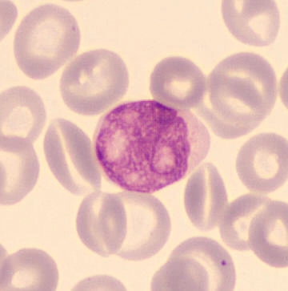
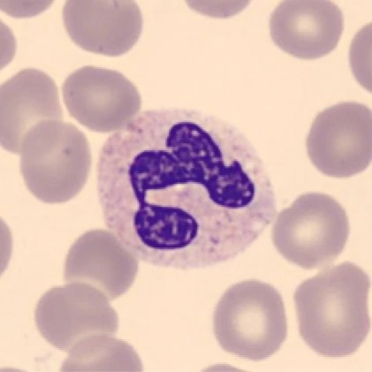
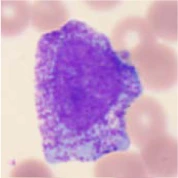
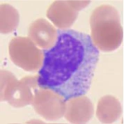
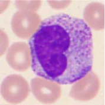
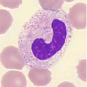
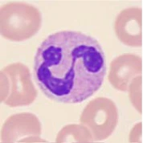

BONE MARROW
Myeloblast
An early recognizable granulocyte precursor. Its large nucleus has fine chromatin and may show nucleoli. Normal marrow contains immature cells; immaturity alone is not cancer.
Fast responders. Powerful cleanup.
Neutrophils leave the blood and move toward signals from injured or infected tissue. They are especially important against bacteria and fungi.

Thin strands connect the nuclear lobes. This is one folded nucleus, not several separate nuclei.
The pale cytoplasm contains antimicrobial supplies that are less striking than eosinophil or basophil granules.
Choose a stage to see what changes.

An early recognizable granulocyte precursor. Its large nucleus has fine chromatin and may show nucleoli. Normal marrow contains immature cells; immaturity alone is not cancer.

REAL MICROSCOPY · WANG ET AL.Primary granules become prominent. The nucleus is still relatively immature.

REAL MICROSCOPY · WANG ET AL.Specific granules emerge. In the neutrophil series, this is the last stage normally able to divide.

REAL MICROSCOPY · WANG ET AL.The nucleus becomes indented and its chromatin more condensed. The cell is maturing rather than dividing.

REAL MICROSCOPY · WANG ET AL.The nucleus curves into a band without the thin connecting strands of a segmented nucleus.

REAL MICROSCOPY · WANG ET AL.A mature neutrophil has connected nuclear lobes and is equipped for rapid antimicrobial defense.
A simplified sequence after lineage commitment. First stage: teaching illustration. Other stages: separate real cells from Wang et al., Fig. 2 (B–F), CC BY 4.0; cropped and converted to WebP. These are not time-lapse images of one cell.
Chemical signals guide neutrophils out of blood vessels and toward inflammation.
The cell surrounds a microbe, draws it into a compartment, and uses enzymes and reactive molecules to damage it.
Neutrophils release signals and can form extracellular traps. An excessive response can also injure tissue.